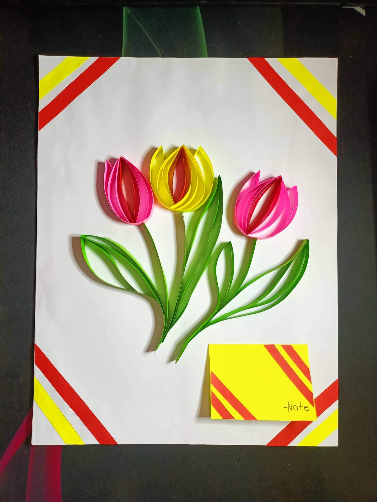
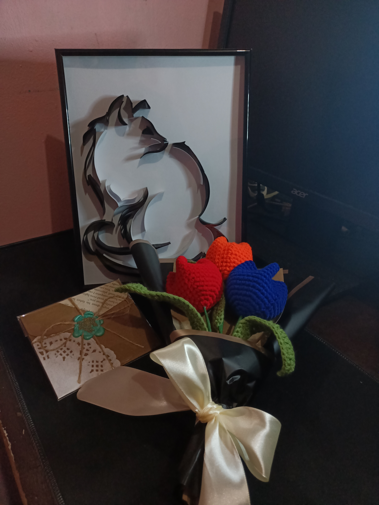
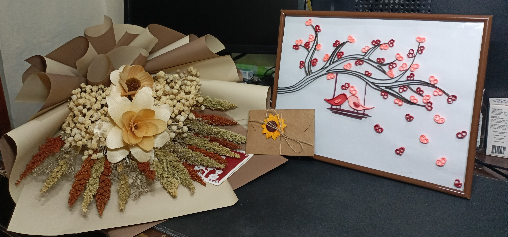

Preferences
Likes
- Playing online games
- Working out (gym and home)
- Watching movies & documentaries
- Creating quilling artwork
- Celebrating special occasions
- Spending time with my girlfriend
- Reflecting on faith & spirituality
- Exploring cultural/heritage
- Writing heartfelt letters
Dislikes
- Inaccuracy or unclear answers
- Doubt in faith
- Overly formal or impersonal writing
- Rushed work
- Procrastination
- Disorganization
- Writing heartfelt letters
- Lack of emotional connection in conversations
- Being unprepared for important events or tasks
My Projects

This paper quilling artwork, created between September and October 2022, is my first attempt at quilling and holds a special place in my heart as a heartfelt gesture for my crush at the time. It features three tulips-two pink and one yellow-carefully crafted with colored paper strips, showcasing the delicate beauty of the flowers. The vibrant tulips are paired with lush green leaves and stems, all arranged against a clean white background. To enhance the composition, I added striking red, yellow, and white decorative stripes in the corners, giving the piece a polished and dynamic frame. A small yellow note card with matching red and yellow striped accents in the bottom right corner adds a warm and personal touch. The harmonious blend of colors-pink, yellow, green, red, and white-creates a visually appealing and meaningful design. Made with quilling paper, adhesive, and a lot of attention to detail, this artwork reflects not only my creativity but also my emotions and effort, making it a truly memorable piece.

This is a special artwork I created around September and October 2023 as a gift for my current girlfriend. It features a framed paper quilling design of a sitting cat, crafted with black quilling paper on a white background, giving it a sleek and artistic look. Alongside it, I made a bouquet of crocheted tulips in vibrant red, orange, and blue, with green stems and leaves, wrapped in black wrapping paper and tied with a cream-colored satin ribbon for a touch of elegance. To complete the gift, I added a handmade card decorated with a golden-brown base, a white doily, a green floral accent, and twine, adding a rustic and personal feel. The combination of quilling, crochet, and card-making reflects the thought and effort I put into creating this meaningful gift for someone so special to me.

This is a heartfelt collection of gifts I made for my girlfriend’s debut back in July and August 2024, combining creativity and thoughtfulness. The centerpiece is a framed paper quilling artwork I crafted, featuring two birds on a swing beneath a blossoming tree with heart-shaped blossoms in shades of red, pink, and brown. Along with it, I bought her a bouquet of dried flowers in earthy tones like beige, cream, orange, red, and green, all elegantly wrapped in brown and cream paper for a rustic vibe. To make it even more personal, I wrote her a handmade letter, tied it with twine, and decorated it with a sunflower accent. This gift set represents not just my creativity but the love and effort I poured into making her special day unforgettable.
Contact Information
Email: cilarde.8746@umak.edu.ph
Phone: 09935641866
Address: 31 J.P Rizal Ext, Taguig City, Philippines